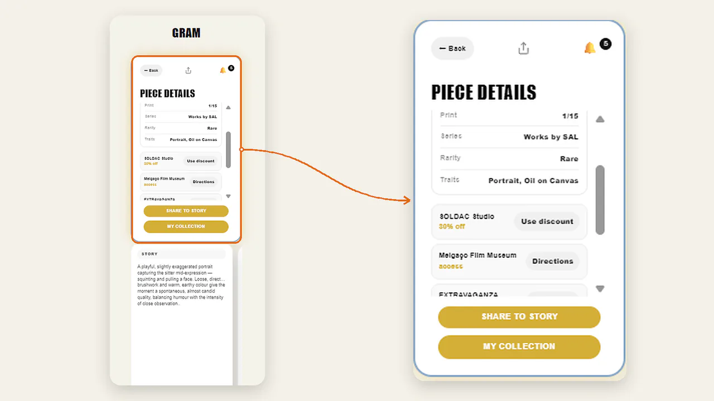

¿Qué son los Beneficios?
Una explicación simple de los beneficios, dónde pueden aparecer y por qué varían entre GRAMs.
Qué son los beneficios
Los beneficios son ventajas, accesos u ofertas conectadas a una GRAM.
¿Son todos iguales?
No. Diferentes GRAMs pueden tener beneficios distintos, y algunas pueden no tener ninguno.
Dónde pueden aparecer
- En la página de la GRAM actual
- En tu colección
- Junto a acciones de socios o experiencias
Guía visual

